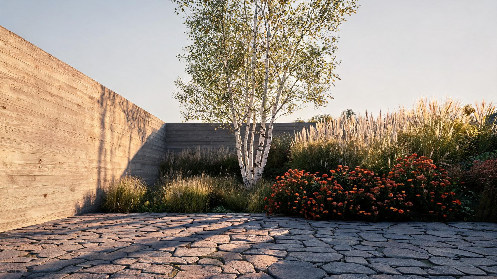
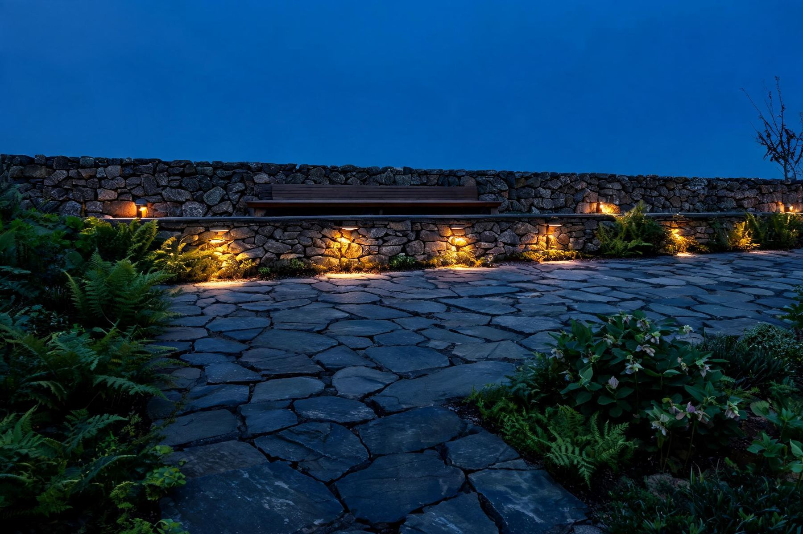
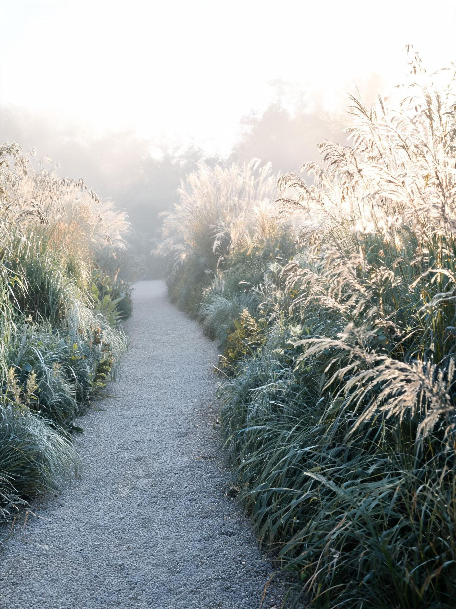
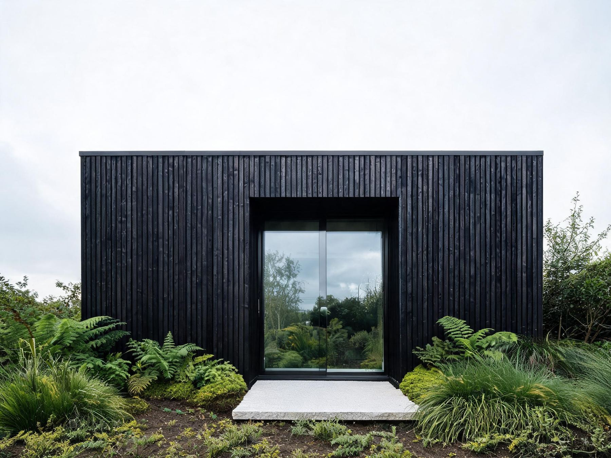

Work
Twelve years of Portland gardens.
Every project below was drawn and built by the same team. Photographs are of the gardens as built, not as rendered.

Laurelhurst
A steep, unusable back slope held with a dry-stone retaining wall and cut into two terraces. The lighting was designed at the same time as the wall, so every fitting sits in a pocket left for it rather than being screwed on afterwards.

Sellwood
Sixty metres of border either side of a single gravel path. Planted for the last light of the year rather than the first — grasses and seed heads that hold their shape until we cut them down in March.


Still wondering something?